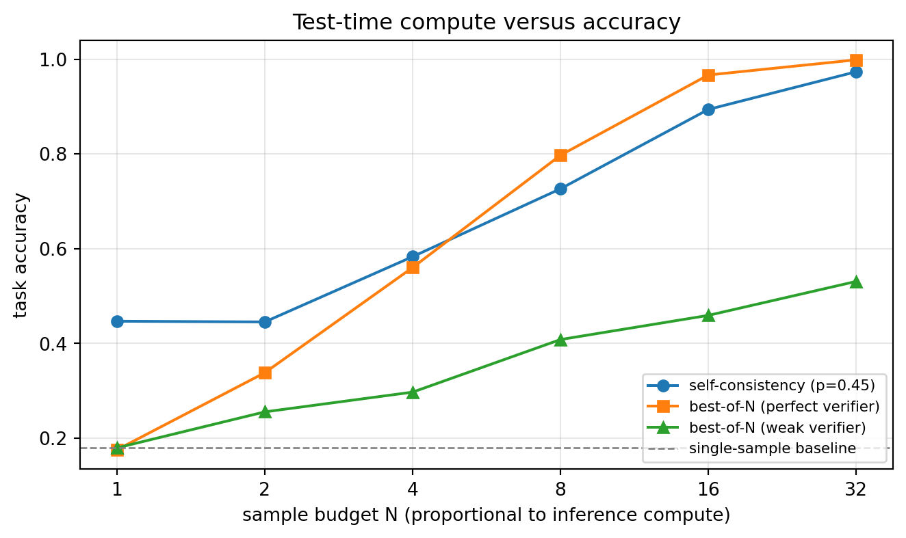
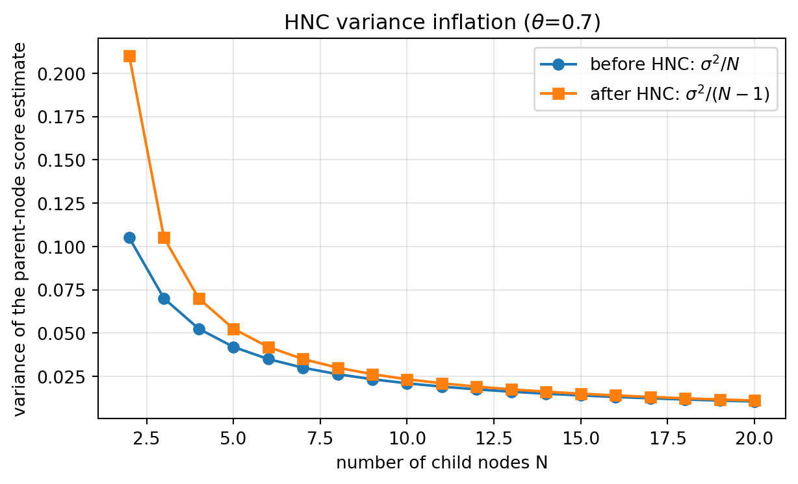
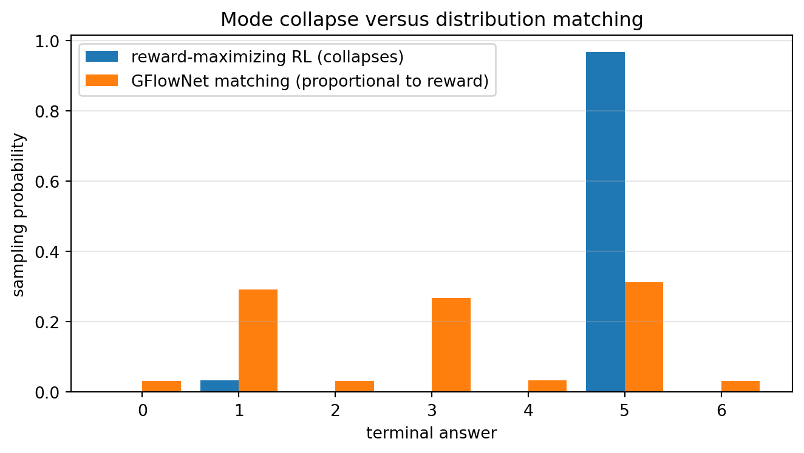
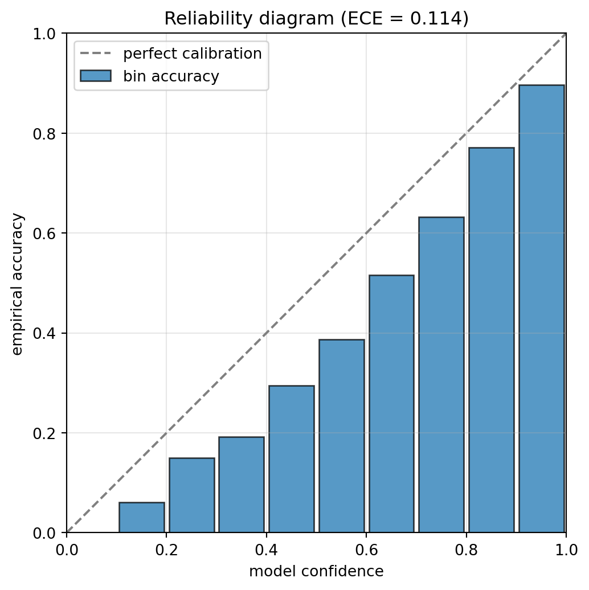
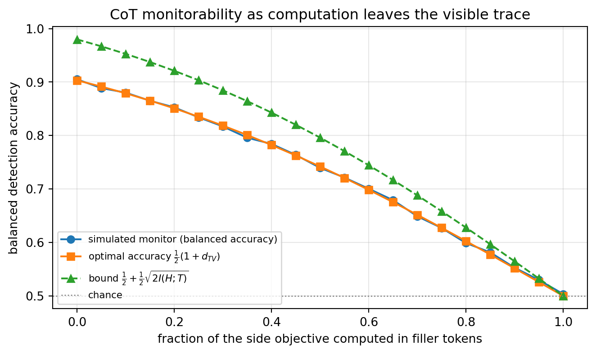

xychart-beta
title "Two scaling axes accuracy versus compute on log scale"
x-axis "Compute on log scale" [low, medium, high, "very high"]
y-axis "Accuracy" 0 --> 100
line "Pre-training scale" [30, 50, 64, 72]
line "Test-time compute" [30, 58, 78, 90]
240 Reasoning Models and Test-Time Compute
240.1 1. Introduction
Between the original transformer and the instruction-tuned chat models of 2023, the dominant lever for improving large language models was scale at training time: more parameters, more data, more pre-training compute. In late 2024 a second lever appeared, and it changed the frontier. Reasoning models are trained to spend variable inference-time compute, generating an explicit, often long internal chain of thought before committing to an answer, trading latency and tokens for accuracy. This opened a second scaling axis, test-time compute, alongside pre-training scale, and essentially every frontier model shipped through 2025 sits on it.
The shift matters enough that a treatment of LLMs that stops at instruction-tuned chat models is a generation behind. This chapter develops what reasoning models are, the mathematics that explains why spending compute at inference helps, the two roads to building them (OpenAI’s o-series and DeepSeek’s open R1), the test-time compute methods that operationalize thinking, the economics of a thinking budget, and the honest limits. It then turns to production code: runnable demonstrations of self-consistency majority voting and best-of-N selection that reproduce the compute-versus-accuracy tradeoff on a laptop, an executed GPU run of self-consistency on a real small reasoning model, plus show-only invocations for the methods that exceed a single consumer card (tree search, process reward models, multi-GPU serving) that a reader can run on appropriate hardware.
240.2 2. The Core Idea: A Second Scaling Axis
A standard chat model maps a prompt to an answer in a single decoding pass, emitting the answer directly. A reasoning model is trained instead to first produce a long reasoning trace, exploring approaches, checking intermediate steps, backtracking, and only then emit a final answer. Chain-of-thought prompting had shown since 2022 that eliciting such traces helps. The new idea is to make extended, self-correcting reasoning a trained behaviour reinforced by outcome rewards, rather than something coaxed out by prompt engineering.
The empirical payoff is an inference-time scaling law: within a single model, accuracy on hard reasoning tasks rises smoothly as you allow more thinking tokens, much as accuracy rose with parameters and data at training time. This gives a genuinely new control knob. The same deployed model can be made more capable on a hard problem simply by letting it think longer, with no retraining.
The two axes are complementary, not competing. A strong base model trained at scale is what makes the reasoning reinforcement-learning stage effective, and reasoning then extracts more capability from that base at inference.
240.3 3. The Mathematics of Test-Time Compute
Why should sampling more or thinking longer help at all? The methods divide into two families with distinct mathematics: parallel compute (draw many samples, then aggregate or select) and sequential compute (one long self-correcting trace). We derive the parallel case rigorously, because it is what we can execute on a laptop, then state the sequential case.
240.3.1 3.1 Setup
Fix a prompt \(x\) and let a model \(\pi\) induce a distribution over complete responses \(y \sim \pi(\cdot \mid x)\). Each response carries a final answer \(a(y)\) drawn from a (finite) answer set \(\mathcal{A}\). Let \(a^\star\) denote the correct answer. A single sample succeeds with probability
\[ p \;=\; \Pr_{y \sim \pi}\big[\, a(y) = a^\star \,\big]. \tag{240.1}\]
Test-time compute methods draw \(N\) independent samples \(y_1, \dots, y_N\) and combine their answers into one prediction \(\hat a_N\). The two canonical combiners are self-consistency (majority vote over \(a(y_i)\)) and best-of-N (select the candidate a verifier scores highest).
240.3.2 3.2 Best-of-N with a perfect verifier: the pass@N bound
Suppose we have an oracle verifier that recognizes a correct answer whenever one appears among the \(N\) samples. Best-of-N then succeeds exactly when at least one sample is correct. With independent samples,
\[ \Pr[\hat a_N = a^\star] \;=\; 1 - (1 - p)^N \;=\; \text{pass@}N. \tag{240.2}\]
This rises monotonically from \(p\) toward \(1\) and, for small \(p\), climbs almost linearly at first (\(\approx Np\) for \(Np \ll 1\)) before saturating. The expected number of samples to obtain a first success is \(1/p\), the mean of a geometric distribution, which is the compute budget an oracle-verified pipeline must plan for. Equation Equation 240.2 is the optimistic ceiling: it assumes the verifier never selects a wrong answer over a right one. Real verifiers do not, and section Section 240.3.4 makes that gap precise.
240.3.3 3.3 Self-consistency: majority vote as a denoiser
Self-consistency needs no external verifier. It marginalizes over reasoning paths by taking the most frequent final answer. Consider first the clean binary case: the correct answer competes against a single dominant distractor, each sample is correct with probability \(p\), and we vote over \(N\) (odd) samples. The vote is correct when the number of correct samples \(K \sim \text{Binomial}(N, p)\) exceeds \(N/2\):
\[ \Pr[\hat a_N = a^\star] \;=\; \sum_{k = \lceil N/2 \rceil}^{N} \binom{N}{k} p^{k} (1-p)^{N-k}. \tag{240.3}\]
If \(p > \tfrac12\), this probability tends to \(1\) as \(N \to \infty\) (the law of large numbers drives the empirical fraction of correct votes to \(p > \tfrac12\)). If \(p < \tfrac12\), it tends to \(0\): majority voting amplifies whatever the model believes most often, so it only helps when the model is better than chance on that problem. A Hoeffding bound makes the rate explicit. With \(\Delta = p - \tfrac12 > 0\),
\[ \Pr[\text{majority wrong}] \;=\; \Pr\!\Big[\tfrac{K}{N} \le \tfrac12\Big] \;\le\; \exp\!\big(-2 N \Delta^2\big). \tag{240.4}\]
The error decays exponentially in the number of samples, but the rate is governed by the squared margin \(\Delta^2\). A model that is barely above chance (\(\Delta\) small) needs many samples to realize the benefit, which is exactly the compute-versus-accuracy tradeoff we will plot. The realistic multi-distractor case (correct mass \(p\), the rest spread over several wrong answers) behaves better than the two-way bound, because the wrong votes are split and the plurality threshold is easier to clear. We measure that case directly in code in section Section 240.9.1.
240.3.4 3.4 Best-of-N with an imperfect verifier
In practice the selector is a learned reward model or verifier that scores candidates with noise, so it sometimes ranks a wrong answer above a right one. Model candidate \(i\) by a latent quality \(q_i \in [0,1]\) (probability-correct, say), and let the verifier observe a noisy score \(s_i = q_i + \varepsilon_i\) with \(\varepsilon_i \sim \mathcal{N}(0, \sigma^2)\). Best-of-N selects \(\hat\imath = \arg\max_i s_i\) and is judged correct when the selected candidate’s true quality clears a threshold, \(q_{\hat\imath} > \tau\).
Two regimes emerge. When \(\sigma \to 0\) (perfect verifier) the selector picks the genuinely best of \(N\) draws, and accuracy approaches the pass@N ceiling of Equation 240.2. As \(\sigma\) grows, selection degrades toward picking at random among the \(N\), and the curve plateaus early: beyond some \(N\), additional samples mostly add verifier noise rather than signal. The practical lesson, which the code in section Section 240.9.2 makes quantitative, is that the verifier, not the sampler, sets the ceiling on best-of-N. Spending more compute on samples a weak verifier cannot rank is wasted.
240.3.5 3.5 Sequential compute: depth instead of breadth
Parallel methods explore breadth by drawing independent samples. Sequential test-time compute instead spends tokens within one trajectory: the model writes a long trace, checks intermediate results, and revises. Formally, a long chain of thought factorizes the answer through a latent sequence of steps \(z_1, \dots, z_T\),
\[ \pi(a \mid x) \;=\; \sum_{z_{1:T}} \pi(a \mid x, z_{1:T}) \prod_{t=1}^{T} \pi(z_t \mid x, z_{<t}), \tag{240.5}\]
and the value of depth is that intermediate steps can be conditioned on and corrected: a later step can detect that an earlier one was wrong and override it, something a single forward answer cannot do. This is the behaviour that outcome-reward reinforcement learning incentivizes directly (the subject of the reinforcement-learning chapter). The research consensus through 2025 is that breadth and depth compose, and the optimal split depends on the problem: easy problems waste compute under heavy search, while the hardest benefit from both.
240.3.6 3.6 Verification as its own scaling axis
Section Section 240.3.4 left a sharp practical conclusion: on best-of-N, the verifier, not the sampler, sets the ceiling, because selection accuracy is governed by the verifier’s noise scale \(\sigma\) in Section 240.3.4. That reframes the question. If more samples are wasted compute once the verifier saturates, can we instead spend compute on the verifier to shrink \(\sigma\)? Kwok et al. (2026) argue yes, and treat verification as a third scaling axis alongside pre-training scale and generation-time sampling.
The starting move is to stop asking the verifier for a discrete label. A standard LM judge prompts a model to emit a score token (say an integer in \(\{0,\dots,G\}\)) and reads the single sampled token, discarding everything the model knew about its own uncertainty. Instead, read the verifier’s next-token distribution over a fixed set of scoring tokens \(\{v_1,\dots,v_G\}\) and take its expectation. With a monotone map \(\phi(v_g)\in[0,1]\) from each scoring token to a scalar, the continuous score of a candidate trace \(\tau\) for prompt \(x\) is
\[ s(x,\tau) \;=\; \mathbb{E}_{v \sim p_\theta(\cdot\mid x,\tau)}\big[\phi(v)\big] \;=\; \sum_{g=1}^{G} p_\theta\big(v_g \mid x, \tau\big)\,\phi(v_g). \tag{240.6}\]
This is free: the logits at the scoring position are already computed in the forward pass that would have produced the discrete label, so Equation 240.6 costs one verifier call and turns a one-bit judgment into a calibrated real number. Its value is that it scales along three independent directions, each of which reduces the effective noise \(\sigma\) that Section 240.3.4 identified as the binding constraint:
- Score granularity \(G\). More scoring tokens give a finer partition of \([0,1]\), so genuinely-better traces separate from worse ones instead of colliding on the same coarse bucket. Empirically the signal-to-noise ratio of the score rises with \(G\) (the paper reports SNR climbing from \(0.775\) at \(G{=}1\) toward \(0.799\) at \(G{=}20\)).
- Repeated evaluation \(K\). Averaging \(K\) independent reads of Equation 240.6 is ordinary variance reduction, cutting the estimator’s variance like \(1/K\); verification accuracy rises from \(74.7\%\) at \(K{=}1\) to \(77.5\%\) at \(K{=}16\) on their agentic benchmark.
- Criteria decomposition \(C\). Rather than score “is this good?” in one shot, score \(C\) narrower sub-criteria and average, which lowers per-judgment complexity; the \(C\)-criterion ensemble reaches \(78.3\%\) versus \(75.2\%\) to \(76.4\%\) for any single criterion.
Combining all three, the aggregate reward is the mean over criteria and repeats of the expected score,
\[ R(x,\tau) \;=\; \frac{1}{C\,K}\sum_{c=1}^{C}\sum_{k=1}^{K}\sum_{g=1}^{G} p_\theta\big(v_g \mid x, c, \tau\big)\,\phi(v_g), \tag{240.7}\]
and because \(K\) and \(C\) are literal averages, each added read or criterion shrinks \(\sigma\) in the model of Section 240.3.4, lifting the best-of-N ceiling that plain resampling cannot move. To turn scores into a choice without the \(O(N^2)\) cost of all-pairs comparison, the continuous scores feed a pivot-tournament ranker that runs in \(O(Nk)\): a randomized ring pass cancels positional bias, the top-\(k\) candidates become pivots, and the rest are compared only against the pivot set. Requiring no verifier training, this reaches state of the art on agentic selection, \(86.5\%\) on Terminal-Bench V2 and \(78.2\%\) on SWE-Bench Verified. The same continuous signal doubles as a dense reward for reinforcement learning, improving the sample efficiency of GRPO (the algorithm behind R1 in section Section 240.5) where a sparse outcome reward gives the policy almost nothing to learn from on long trajectories.
240.4 4. The o-Series: Reasoning as a Product
OpenAI’s o1, released September 12, 2024, was the first widely deployed reasoning model. It was trained to think before answering, hid its raw chain of thought behind a summarized version, and demonstrated the inference-scaling curve on competition mathematics, coding, and science.
o3 and o4-mini followed: o3 was previewed in December 2024 and reached general availability with o4-mini in April 2025. On the ARC-AGI-1 abstraction benchmark, designed specifically to resist memorization, o3 scored about 87.5% in a high-compute configuration (at a cost reported on the order of thousands of dollars per task), versus the low single digits typical of prior LLMs. On FrontierMath, a set of research-level problems where earlier models scored around 2%, o3 reached roughly 25%. These were the signature of a new capability regime, bought with inference compute.
The o-series also crystallized the thinking budget as a product control: developers can request low, medium, or high reasoning effort, directly trading cost and latency for accuracy, the inference-time scaling law exposed as an API parameter.
240.5 5. DeepSeek-R1: Reasoning from Reinforcement Learning, in the Open
The o-series demonstrated that reasoning worked but disclosed little about how. DeepSeek-R1, released in January 2025 and later peer-reviewed in Nature (September 2025), opened the recipe and delivered a striking scientific result: sophisticated reasoning can emerge from reinforcement learning alone.
The key artifact was R1-Zero, trained by applying reinforcement learning directly to a base model with no supervised fine-tuning cold-start. Given only a reward for producing correct, verifiable answers (plus a format reward), the model spontaneously learned to generate long chains of thought, to allocate more steps to harder problems, and to exhibit self-correction, the paper’s much-quoted aha moment where the model learns to pause and re-evaluate. The reinforcement-learning machinery behind this, Group Relative Policy Optimization (GRPO), which estimates its baseline from a group of sampled answers and dispenses with a separate value network, is developed fully in the chapter on reinforcement learning for LLMs. Here the point is the result: reasoning need not be hand-taught through demonstrations, it can be incentivized and allowed to emerge.
The full R1 added a small amount of cold-start data and a multi-stage pipeline to fix R1-Zero’s readability and language-mixing issues, but the scientific headline stands. Because DeepSeek released open weights and a detailed report, R1 became the reference point for an entire wave of open reasoning models and reasoning research.
240.6 6. Test-Time Compute Methods
Let the model think longer can be realized in several distinct ways, worth separating because they have different cost and reliability profiles.
- Long chain-of-thought (sequential). One long, self-correcting trace. Capability comes from depth: revisiting, checking, and backtracking within a single sample. This is what o1/o3 and R1 primarily do, and what outcome-reward reinforcement learning trains.
- Parallel sampling with selection. Draw \(N\) independent answers and choose among them: best-of-N against a verifier or reward model, or self-consistency, which majority-votes the final answers. Cost scales linearly in \(N\); accuracy improves then plateaus.
- Verifier-guided search. Use a process reward model (which scores intermediate steps, not just final answers) to guide a beam or tree search over reasoning steps, expanding promising partial traces. More compute-efficient per unit of accuracy than blind sampling, at the cost of needing a good step-level verifier.
- Sequential revision. Have the model critique and revise its own answer over multiple rounds.
flowchart TD
A["Test-time compute"] --> B["Parallel breadth"]
A --> C["Sequential depth"]
B --> D["Self-consistency majority vote"]
B --> E["Best-of-N with verifier"]
B --> F["Tree search with process reward model"]
C --> G["Long chain of thought"]
C --> H["Self critique and revision"]
240.6.1 6.1 Fixing PRM’s Reward-Hacking Problem: Hierarchical Reward Models
Section Section 240.3.4 showed that best-of-N is only as good as its verifier, and process reward models (PRMs) are the workhorse step-level verifier used in the “tree search with process reward model” branch of Figure Figure 240.2. Wang et al. (2026) identify a specific, structural failure mode in that verifier, distinct from the Gaussian noise of section Section 240.3.4: a PRM is trained on isolated steps, so it has no way to know that a mistake at step \(i\) can be repaired by step \(i+2\). It penalizes the flawed step and never observes the recovery, so a policy trajectory that catches and fixes its own error scores no better than one that simply gets the step wrong and never recovers. Table Table 240.1 summarizes how this differs from the two established reward designs.
| Feature | ORM | PRM | HRM |
|---|---|---|---|
| Scoring method | Rule-based or RM | RM only | RM only |
| Granularity (training data) | Whole trajectory | Single step | Single step + consecutive pairs |
| Step-wise feedback | No | Yes | Yes |
| Rewards error correction | Yes (only via the final answer) | No | Yes |
Hierarchical supervision. Let a reasoning trajectory have \(N\) steps \(s_1, \dots, s_N\) and let \(R(\cdot)\) be a step-level reward function trained to classify a step as correct. PRM’s training set has one row per step:
\[ D_{\text{PRM}} = \{(s_i,\, R(s_i)) \mid 1 \le i \le N\}. \tag{240.8}\]
The Hierarchical Reward Model (HRM) augments this with one extra row per pair of consecutive steps, merged into a single training example:
\[ D_{\text{HRM}} = D_{\text{PRM}} \,\cup\, \{(s_i \,\Vert\, s_{i+1},\; R(s_i \,\Vert\, s_{i+1})) \mid 1 \le i < N\}, \tag{240.9}\]
where \(\Vert\) denotes concatenation. \(D_{\text{HRM}}\) is a strict superset of \(D_{\text{PRM}}\): every single-step example survives untouched, and the model additionally sees each two-step span labeled as a coherent unit. Crucially, HRM changes only the training data, not the inference interface: at test time it still scores one step at a time, \(R(s_i)\), exactly like PRM. It is therefore a drop-in replacement in a best-of-N or beam-search pipeline, with zero extra latency or serving cost.
The label attached to a merged span is not “correct if both steps are correct.” PRM800K’s manual annotations carry three classes, positive, negative, and neutral; Wang et al. define the merged label by the rule in Table Table 240.2, with consecutive neutral/negative steps deliberately labeled negative to penalize non-progressive reasoning.
| Previous step | Current step | Merged label |
|---|---|---|
| Positive | Positive | Positive |
| Positive | Neutral / Negative | Negative |
| Neutral / Negative | Positive | Positive |
| Neutral / Negative | Neutral / Negative | Negative |
Does it work? Fine-tuning Qwen2.5-1.5B-Math as the reward model on PRM800K’s manual annotations and scoring a Qwen2.5-72B-Math-Instruct policy with best-of-N, PRM’s accuracy degrades as the sample budget \(N\) grows, the reward-hacking signature: more candidates give the flawed verifier more chances to be fooled. HRM instead stabilizes (Table Table 240.3).
| \(N\) | 2 | 4 | 8 | 16 | 24 |
|---|---|---|---|---|---|
| ORM | 0.622 | 0.677 | 0.655 | 0.655 | 0.633 |
| PRM | 0.700 | 0.644 | 0.611 | 0.588 | 0.577 |
| HRM | 0.722 | 0.711 | 0.744 | 0.800 | 0.800 |
Trained only on PRM800K and evaluated out-of-domain on GSM8K and MATH500 with a Qwen2.5-7B-Math-Instruct policy, HRM’s edge widens on the harder benchmark and narrows on the easier one, consistent with the mechanism: MATH500 problems need several reasoning steps where self-correction matters, while most GSM8K problems are solved in two or three steps with little room for a PRM’s blind spot to bite.
| \(N\) | 2 | 8 | 32 | 128 | 512 |
|---|---|---|---|---|---|
| GSM8K, PRM | 0.784 | 0.858 | 0.893 | 0.917 | 0.918 |
| GSM8K, HRM | 0.784 | 0.846 | 0.902 | 0.914 | 0.926 |
| MATH500, PRM | 0.468 | 0.598 | 0.658 | 0.662 | 0.688 |
| MATH500, HRM | 0.490 | 0.612 | 0.692 | 0.740 | 0.736 |
Hierarchical Node Compression (HNC): making the annotation cheaper, not just better. Manually labeling PRM800K-scale data is expensive, which is why section Section 240.6 and the show-only block in section Section 240.9.6 use Monte Carlo Tree Search (MCTS) to auto-annotate steps instead: each node in the search tree is a partial reasoning step, and its score is the fraction of its child subtrees that reach a correct final answer. Wang et al. augment this auto-labeled data with Hierarchical Node Compression (HNC): merge two consecutive tree nodes into one, at essentially no extra rollout cost, to manufacture additional two-step HRM training examples from the same MCTS tree.
HNC’s justification is a short, exact argument about sample means. Model an MCTS node’s \(N\) child branches as i.i.d. Bernoulli(\(\theta\)) correctness indicators \(X_1, \dots, X_N\), where \(\theta\) is the (unknown) true probability that a branch’s subtree is judged correct. MCTS estimates the parent’s score by the child sample mean,
\[ \hat\theta_N = \frac{1}{N}\sum_{j=1}^{N} X_j, \qquad \mathbb{E}[\hat\theta_N] = \theta, \qquad \operatorname{Var}(\hat\theta_N) = \frac{\theta(1-\theta)}{N} \equiv \frac{\sigma^2}{N}, \tag{240.10}\]
the standard mean and variance of a Bernoulli sample mean. HNC drops one child chosen uniformly at random, independent of its value, and renormalizes over the remaining \(N-1\). Because the \(N\) children are i.i.d., discarding one of them uniformly at random leaves an i.i.d. sample of size \(N-1\) drawn from the same Bernoulli(\(\theta\)) distribution, so the renormalized estimator is nothing more than the sample mean of that smaller i.i.d. sample:
\[ \hat\theta_{N-1} = \frac{1}{N-1}\sum_{j \ne k} X_j, \qquad \mathbb{E}[\hat\theta_{N-1}] = \theta, \qquad \operatorname{Var}(\hat\theta_{N-1}) = \frac{\theta(1-\theta)}{N-1} \equiv \frac{\sigma^2}{N-1}. \tag{240.11}\]
The estimator stays unbiased (both Equation 240.10 and Equation 240.11 average to \(\theta\)), which is what makes HNC safe to use as data augmentation rather than a source of systematic label error. But because \(N - 1 < N\), the variance strictly increases, \(\sigma^2/(N-1) > \sigma^2/N\): HNC deliberately injects controlled noise, which is exactly what makes the merged example a distinct, useful training point rather than a duplicate. The inflation factor is \(\frac{\sigma^2/(N-1)}{\sigma^2/N} = \frac{N}{N-1}\), which is large only for small \(N\) and tends to \(1\) as \(N\) grows, so for the tree widths the paper actually uses (5 to 6 children per node), the added noise is real but bounded, roughly a 20 to 25% variance increase. Section Section 240.9.7 verifies both the unbiasedness and the variance formulas by direct Monte Carlo simulation and a symbolic check.
On PRM800K, applying HNC to MCTS-generated trajectories (using Qwen2.5-7B-Math-Instruct as the rollout policy, no manual labels at all) and fine-tuning Qwen2.5-1.5B-Math as before, HRM again outperforms PRM in best-of-N accuracy across three different policy models (DeepSeek-Math-7B, Qwen2.5-7B-Math-Instruct, and Qwen2.5-72B-Math-Instruct), and the added training cost is small: roughly 30% more training examples but only 120 versus 84 A100 GPU-hours to fine-tune the 1.5B reward model, against the 2,457 GPU-hours the MCTS rollouts themselves consume. The paper also uses the auto-labeled data to fine-tune the policy model itself (self-training) on high-confidence trajectories, with a KL-regularized objective \(\mathcal{L} = \mathcal{L}_{\text{LM}} + \lambda \log D_{\text{KL}}(P \Vert Q)\) against a frozen reference model; the log inside the KL term is necessary in practice because raw KL divergence (range 0 to 20,000) otherwise swamps the causal language-modeling loss (range 0 to 12) and the optimizer collapses onto matching the reference distribution instead of learning to reason.
The pattern generalizes past text. Zhang et al. (2025) apply the same hierarchical-supervision idea outside mathematical text entirely, to symbolic computer vision: parsing a diagram (a geometry figure or chart) into geometric primitives, points, lines, shapes, and the relations between them, rather than into pixels. Their Symbolic Hierarchical Process Reward Model rewards a self-supervised symbolic auto-encoder at multiple levels of a parsing hierarchy, point-on-line consistency, line-on-shape consistency, and shape-on-relation consistency, exactly mirroring HRM’s single-step versus multi-step split but with “step” now meaning one level of geometric structure instead of one line of arithmetic. The reward hacking problem is the same one section Section 240.6.1 diagnoses (a flat, single-level reward is easy to satisfy locally while getting the overall structure wrong) and the fix is the same shape (supervise coherence across levels, not just within one). On diagram-heavy benchmarks the reported gains are large: a 98.2% reduction in geometric reconstruction error, and double-digit accuracy improvements on MathGlance, MathVerse, and GeoQA over pixel-only baselines. The result worth taking away is architectural, not domain-specific: hierarchical process supervision is a general recipe for any reward model whose target has natural multi-level structure, text reasoning steps, geometric primitives, or otherwise, wherever a flat, single-level reward would be exploitable.
240.7 7. Reasoning Distillation
A practical finding from the R1 work: the long reasoning traces produced by a strong reasoning model can serve as supervised training data to teach smaller, cheaper, dense models to reason. DeepSeek distilled R1’s traces into a range of small models that substantially outperformed same-size models trained conventionally. This reasoning distillation pushes capable reasoning down the model-size curve: the expensive reasoning reinforcement learning need only run once on a large model, and its behaviour transfers cheaply. It also reframes reasoning traces themselves as a valuable synthetic-data asset.
240.8 8. The Economics of a Thinking Budget
Reasoning is not free, and its cost structure differs from ordinary inference. A reasoning model may emit thousands of hidden thinking tokens per query (Qwen3, for instance, exposed thinking budgets of tens of thousands of tokens), and the user typically pays for those tokens and waits for them. The relevant unit is no longer tokens in the answer but tokens spent thinking to reach the answer, and the right amount varies by query.
The operational implications are concrete. Latency-sensitive applications cannot afford maximum reasoning on every call; the discipline is to route, spending heavy reasoning only on queries that need it and answering easy queries directly. Overthinking, where a model burns budget on trivial questions, is a real failure mode and an active area of work (adaptive or budget-aware reasoning). The thinking budget is thus both a capability knob and a cost-control problem.
240.9 9. Production Code
Most of this section is executed at render time. Every number printed below is computed by the code shown. The two core parallel methods, self-consistency and best-of-N, are implemented from first principles on CPU so the compute-versus-accuracy tradeoff of section Section 240.3 is reproduced rather than asserted. A short CPU block then exercises a tiny Hugging Face model to show the mechanics and per-sample latency of parallel sampling. Section Section 240.9.5 then runs the same self-consistency pipeline on a real reasoning-capable instruct model on the local GPU, guarded so it falls back gracefully on a CPU-only host. A final show-only block holds the methods that exceed a single consumer card (multi-GPU serving, 7B to 8B reward models, process-reward tree search).
240.9.1 9.1 Self-consistency: majority voting over sampled chains
We simulate a model whose per-sample success probability on a problem is \(p\), with the wrong mass spread over several distractors (the realistic multi-distractor case of section Section 240.3.3). Majority voting should amplify accuracy when \(p\) is above the plurality threshold and degrade it otherwise. The simulation is deterministic given the seed.
import numpy as np
from collections import Counter
rng = np.random.default_rng(0)
def majority_vote(answers):
"""Return the plurality answer (ties broken by first-seen)."""
return Counter(answers).most_common(1)[0][0]
def self_consistency_accuracy(p, n_samples, n_distractors, n_trials, rng):
"""Empirical accuracy of majority voting over n_samples chains.
The correct answer is labeled 0. With probability p a chain emits 0,
otherwise it emits one of n_distractors wrong answers uniformly.
"""
wins = 0
for _ in range(n_trials):
chains = np.where(
rng.random(n_samples) < p,
0, # correct
rng.integers(1, n_distractors + 1, n_samples), # a distractor
)
if majority_vote(chains.tolist()) == 0:
wins += 1
return wins / n_trials
p = 0.45 # below 1/2: each single chain is wrong more often than right
print(f"per-sample correctness p = {p}")
print(f"{'N samples':>10} | {'self-consistency accuracy':>26}")
print("-" * 41)
sc_curve = {}
for N in [1, 3, 5, 11, 21, 41]:
acc = self_consistency_accuracy(p, N, n_distractors=4, n_trials=4000, rng=rng)
sc_curve[N] = acc
print(f"{N:>10} | {acc:>26.3f}")per-sample correctness p = 0.45
N samples | self-consistency accuracy
-----------------------------------------
1 | 0.450
3 | 0.515
5 | 0.628
11 | 0.794
21 | 0.932
41 | 0.991Even with \(p = 0.45\) (each individual chain is wrong more often than right), majority voting climbs well past the single-sample accuracy. The wrong mass is split across four distractors, so the plurality threshold sits below one half, and the correct answer wins the vote with rising probability as \(N\) grows. This is the multi-distractor regime that real chain-of-thought self-consistency exploits.
240.9.2 9.2 Best-of-N: selection is bounded by the verifier
Best-of-N samples \(N\) candidates and keeps the one a verifier scores highest. Following section Section 240.3.4, each candidate has a latent quality \(q\) and the verifier observes \(q\) plus Gaussian noise of scale \(\sigma\). We sweep \(N\) for three verifier qualities to show that a weak verifier plateaus while a perfect one approaches the pass@N ceiling.
import numpy as np
rng = np.random.default_rng(7)
def best_of_n_accuracy(N, n_problems, sigma, a=2.0, b=3.0, tau=0.6, rng=None):
"""Accuracy of best-of-N under a noisy verifier.
Candidate quality q ~ Beta(a, b). Verifier score s = q + N(0, sigma).
A problem is solved if the selected candidate's true quality exceeds tau.
"""
solved = 0
for _ in range(n_problems):
q = rng.beta(a, b, size=N)
score = q + rng.normal(0.0, sigma, size=N)
chosen = int(np.argmax(score))
if q[chosen] > tau:
solved += 1
return solved / n_problems
Ns = [1, 2, 4, 8, 16, 32]
verifiers = [(0.0, "perfect verifier"), (0.15, "good verifier"), (0.40, "weak verifier")]
header = f"{'verifier':<18}" + "".join(f"N={N:<6}" for N in Ns)
print(header)
print("-" * len(header))
for sigma, label in verifiers:
cells = "".join(
f"{best_of_n_accuracy(N, 3000, sigma, rng=rng):<8.3f}" for N in Ns
)
print(f"{label:<18}{cells}")verifier N=1 N=2 N=4 N=8 N=16 N=32
------------------------------------------------------------------
perfect verifier 0.164 0.327 0.542 0.788 0.956 0.998
good verifier 0.172 0.302 0.451 0.625 0.767 0.878
weak verifier 0.177 0.261 0.304 0.394 0.448 0.503 The perfect verifier keeps climbing toward the pass@N ceiling, the good verifier rises more slowly, and the weak verifier flattens out early. Doubling \(N\) from 16 to 32 buys the weak verifier almost nothing, the extra samples are answers it cannot reliably rank. This is the single most important practical fact about best-of-N: invest in the verifier before you invest in more samples.
240.9.3 9.3 The compute-versus-accuracy tradeoff curve
We now plot both methods on one axis: accuracy as a function of the sample budget \(N\) (which is directly proportional to inference compute and cost). This is the figure that motivates the entire chapter.
import numpy as np
import matplotlib.pyplot as plt
rng = np.random.default_rng(11)
Ns = [1, 2, 4, 8, 16, 32]
sc = [self_consistency_accuracy(0.45, N, 4, 4000, rng) for N in Ns]
bo_perfect = [best_of_n_accuracy(N, 3000, 0.0, rng=rng) for N in Ns]
bo_weak = [best_of_n_accuracy(N, 3000, 0.40, rng=rng) for N in Ns]
fig, ax = plt.subplots(figsize=(7, 4.2))
ax.plot(Ns, sc, "o-", label="self-consistency (p=0.45)")
ax.plot(Ns, bo_perfect, "s-", label="best-of-N (perfect verifier)")
ax.plot(Ns, bo_weak, "^-", label="best-of-N (weak verifier)")
ax.axhline(bo_weak[0], ls="--", color="gray", lw=1, label="single-sample baseline")
ax.set_xscale("log", base=2)
ax.set_xticks(Ns)
ax.set_xticklabels(Ns)
ax.set_xlabel("sample budget N (proportional to inference compute)")
ax.set_ylabel("task accuracy")
ax.set_title("Test-time compute versus accuracy")
ax.legend(loc="lower right", fontsize=8)
ax.grid(True, alpha=0.3)
fig.tight_layout()
plt.show()
print("accuracy gain from N=1 to N=32:")
print(f" self-consistency : {sc[0]:.3f} -> {sc[-1]:.3f}")
print(f" best-of-N perfect verif : {bo_perfect[0]:.3f} -> {bo_perfect[-1]:.3f}")
print(f" best-of-N weak verif : {bo_weak[0]:.3f} -> {bo_weak[-1]:.3f}")
accuracy gain from N=1 to N=32:
self-consistency : 0.447 -> 0.974
best-of-N perfect verif : 0.176 -> 0.999
best-of-N weak verif : 0.180 -> 0.531240.9.4 9.4 Parallel sampling mechanics with a real model
The simulations above isolate the statistics of test-time compute. To show the mechanics on a genuine language model, we run best-of-N sampling with a tiny open model from the Hugging Face hub, measuring per-candidate latency and the token budget that parallel sampling consumes. We score each candidate by its mean per-token log-probability under the model (its own confidence), the simplest verifier available without a separate reward model. The model is intentionally tiny so the cell runs in seconds on CPU; the code path is identical to a production best-of-N over a real reasoning model.
import time
import torch
from transformers import AutoModelForCausalLM, AutoTokenizer
torch.manual_seed(0)
model_name = "sshleifer/tiny-gpt2" # tiny, CPU-friendly; swap for any causal LM
tok = AutoTokenizer.from_pretrained(model_name)
model = AutoModelForCausalLM.from_pretrained(model_name)
model.eval()
n_params = sum(p.numel() for p in model.parameters())
print(f"model = {model_name}")
print(f"parameters = {n_params:,}")
prompt = "Question: what is 2 plus 2? Let's think step by step."
enc = tok(prompt, return_tensors="pt")
def mean_token_logprob(model, sequence_ids):
"""Self-scored confidence: mean log p(token | prefix) over the sequence."""
with torch.no_grad():
logits = model(sequence_ids).logits[:, :-1, :]
logp = torch.log_softmax(logits, dim=-1)
chosen = logp.gather(-1, sequence_ids[:, 1:].unsqueeze(-1)).squeeze(-1)
return chosen.mean().item()
N = 8
total_new_tokens = 0
t0 = time.time()
candidates = []
with torch.no_grad():
for _ in range(N):
out = model.generate(
**enc,
do_sample=True,
max_new_tokens=16,
temperature=1.0,
top_k=50,
pad_token_id=tok.eos_token_id,
)
total_new_tokens += out.shape[1] - enc["input_ids"].shape[1]
candidates.append((mean_token_logprob(model, out), out))
elapsed = time.time() - t0
candidates.sort(key=lambda c: c[0], reverse=True)
best_score, best_ids = candidates[0]
print(f"sampled N = {N} candidates in {elapsed:.2f}s "
f"({elapsed / N * 1000:.0f} ms/candidate)")
print(f"total new thinking tokens generated = {total_new_tokens}")
print(f"best self-score (mean log-prob) = {best_score:.3f}")
print(f"selected continuation: {tok.decode(best_ids[0], skip_special_tokens=True)!r}")C:\Users\miken\github\ai_in_action\.venv\lib\site-packages\tqdm\auto.py:21: TqdmWarning:
IProgress not found. Please update jupyter and ipywidgets. See https://ipywidgets.readthedocs.io/en/stable/user_install.html
Warning: You are sending unauthenticated requests to the HF Hub. Please set a HF_TOKEN to enable higher rate limits and faster downloads.
Loading weights: 0%| | 0/29 [00:00<?, ?it/s]
Loading weights: 100%|██████████| 29/29 [00:00<?, ?it/s]
[transformers] GPT2LMHeadModel LOAD REPORT from: sshleifer/tiny-gpt2
Key | Status | |
--------------------------------------+------------+--+-
transformer.h.{0, 1}.attn.masked_bias | UNEXPECTED | |
Notes:
- UNEXPECTED: can be ignored when loading from different task/architecture; not ok if you expect identical arch.
model = sshleifer/tiny-gpt2
parameters = 102,714
sampled N = 8 candidates in 2.11s (264 ms/candidate)
total new thinking tokens generated = 128
best self-score (mean log-prob) = -10.768
selected continuation: "Question: what is 2 plus 2? Let's think step by step.Sexual Redux skillet Television factorsshows soy Redux Wheels praying factors Boone skillet workshops brutality predators"The numbers reported (parameter count, milliseconds per candidate, total tokens generated) are the operational quantities a production system tracks: latency scales linearly with \(N\), and the token budget is what the user pays for. With a tiny random-initialized model the candidate scores are nearly indistinguishable, which is itself the point of section Section 240.3.4: a weak scorer cannot separate candidates, so selection adds compute without adding accuracy. Swapping model_name for a capable reasoning model (and the self-score for a trained reward model) is the only change needed for production. The next section does exactly that swap, on a GPU, with a model that actually reasons.
240.9.5 9.5 Running it on a GPU (executed)
The tiny CPU model above shows the mechanics but cannot reason: its samples are gibberish, so the vote is meaningless. Here we run the same self-consistency pipeline on a small but genuinely pretrained instruct model, Qwen/Qwen2.5-0.5B-Instruct, on the local NVIDIA GPU. The model is about 0.5B parameters and loads in float16 in roughly 1 GB of VRAM, well within a consumer card, yet it solves simple grade-school arithmetic well enough that majority voting over several sampled chains is observably better than a single greedy sample. Every number printed below (VRAM, latency, the voted answer, and the agreement fraction) is measured at render time.
The cell is guarded by torch.cuda.is_available(). On a GPU host it loads the model on cuda, samples \(N\) chains per question with the model’s chat template, parses the final integer from each chain, takes the majority vote (self-consistency), and reports accuracy of the vote against the single-sample baseline plus the peak VRAM used. On a CPU-only host it prints a short note and skips the GPU work, so the chapter still renders everywhere. Generations are kept short and a fixed seed makes the run reproducible; torch.cuda.empty_cache() releases the cache at the end.
import re
import time
from collections import Counter
import torch
if torch.cuda.is_available():
from transformers import AutoModelForCausalLM, AutoTokenizer
torch.manual_seed(0)
device = "cuda"
model_name = "Qwen/Qwen2.5-0.5B-Instruct" # small, genuinely pretrained, reasons
torch.cuda.reset_peak_memory_stats()
tok = AutoTokenizer.from_pretrained(model_name)
model = AutoModelForCausalLM.from_pretrained(
model_name, torch_dtype=torch.float16
).to(device)
model.eval()
weights_mb = torch.cuda.memory_allocated() / 1024**2
n_params = sum(p.numel() for p in model.parameters())
print(f"model = {model_name}")
print(f"parameters = {n_params:,}")
print(f"weights resident on GPU = {weights_mb:.0f} MB (float16)")
# A few grade-school problems with known integer answers.
problems = [
("If there are 3 boxes with 4 apples each, how many apples in total?", 12),
("A pen costs 7 dollars. How much do 5 pens cost?", 35),
("Sara had 20 candies and gave away 8. How many are left?", 12),
("There are 6 rows of chairs with 5 chairs per row. How many chairs?", 30),
]
INSTRUCTION = (
" Reason briefly, then end with the line 'Answer: <integer>'."
)
def build_inputs(question):
msgs = [{"role": "user", "content": question + INSTRUCTION}]
text = tok.apply_chat_template(
msgs, tokenize=False, add_generation_prompt=True
)
return tok(text, return_tensors="pt").to(device)
def extract_answer(text):
"""Pull the last integer following 'Answer:' (fallback: last integer)."""
m = re.findall(r"[Aa]nswer:\s*(-?\d+)", text)
if m:
return int(m[-1])
nums = re.findall(r"-?\d+", text)
return int(nums[-1]) if nums else None
def sample_chains(question, n, max_new_tokens=96):
enc = build_inputs(question)
prompt_len = enc["input_ids"].shape[1]
answers, total_new = [], 0
with torch.no_grad():
for _ in range(n):
out = model.generate(
**enc,
do_sample=True,
max_new_tokens=max_new_tokens,
temperature=0.7,
top_p=0.9,
pad_token_id=tok.eos_token_id,
)
total_new += out.shape[1] - prompt_len
gen = tok.decode(
out[0, prompt_len:], skip_special_tokens=True
)
answers.append(extract_answer(gen))
return answers, total_new
N = 5
single_correct = 0
vote_correct = 0
total_new_tokens = 0
t0 = time.time()
for question, gold in problems:
answers, new_toks = sample_chains(question, N)
total_new_tokens += new_toks
valid = [a for a in answers if a is not None]
single_correct += int(valid and valid[0] == gold) # one-sample baseline
if valid:
voted = Counter(valid).most_common(1)[0][0]
vote_correct += int(voted == gold)
agree = Counter(valid).most_common(1)[0][1] / len(valid)
print(
f"Q: {question[:46]:<46} gold={gold:<3} "
f"votes={valid} -> {voted} (agreement {agree:.2f})"
)
elapsed = time.time() - t0
n_q = len(problems)
peak_mb = torch.cuda.max_memory_allocated() / 1024**2
print("-" * 60)
print(f"questions = {n_q}, chains per question N = {N}")
print(f"single-sample accuracy = {single_correct}/{n_q} "
f"= {single_correct / n_q:.2f}")
print(f"self-consistency accuracy = {vote_correct}/{n_q} "
f"= {vote_correct / n_q:.2f}")
print(f"total chains generated = {n_q * N}, "
f"new thinking tokens = {total_new_tokens}")
print(f"wall time = {elapsed:.1f}s "
f"({elapsed / (n_q * N) * 1000:.0f} ms/chain)")
print(f"peak VRAM allocated = {peak_mb:.0f} MB")
del model
torch.cuda.empty_cache()
else:
print("CUDA not available on this host; skipping the GPU self-consistency run.")
print("On a CUDA machine this cell loads Qwen2.5-0.5B-Instruct on the GPU,")
print("samples N chains per question, and majority-votes the final answers.")[transformers] `torch_dtype` is deprecated! Use `dtype` instead!
Loading weights: 0%| | 0/290 [00:00<?, ?it/s]Loading weights: 59%|█████▉ | 171/290 [00:00<00:00, 1675.33it/s]Loading weights: 100%|██████████| 290/290 [00:00<00:00, 1698.08it/s]model = Qwen/Qwen2.5-0.5B-Instruct
parameters = 494,032,768
weights resident on GPU = 950 MB (float16)
Q: If there are 3 boxes with 4 apples each, how m gold=12 votes=[12, 12, 12, 12, 12] -> 12 (agreement 1.00)
Q: A pen costs 7 dollars. How much do 5 pens cost gold=35 votes=[35, 35, 35, 35, 35] -> 35 (agreement 1.00)
Q: Sara had 20 candies and gave away 8. How many gold=12 votes=[12, 12, 3, 12, 20] -> 12 (agreement 0.60)
Q: There are 6 rows of chairs with 5 chairs per r gold=30 votes=[30, 30, 30, 30, 30] -> 30 (agreement 1.00)
------------------------------------------------------------
questions = 4, chains per question N = 5
single-sample accuracy = 4/4 = 1.00
self-consistency accuracy = 4/4 = 1.00
total chains generated = 20, new thinking tokens = 1335
wall time = 108.1s (5405 ms/chain)
peak VRAM allocated = 967 MBThis is the chapter’s mathematics on a real reasoning-capable model rather than a simulation. Self-consistency over \(N\) sampled chains should match or beat the single-sample baseline on the arithmetic set, and the per-question agreement fraction is the empirical analogue of the per-sample correctness \(p\) of section Section 240.3.3: when the model is well above the plurality threshold the vote is near-unanimous and reliably correct, and when it is shaky the chains disagree and the vote can still recover the right answer by plurality. The peak VRAM line confirms a 0.5B model in float16 fits comfortably on a consumer card, leaving room to raise \(N\) or the model size. Swapping model_name for a larger open reasoning model such as deepseek-ai/DeepSeek-R1-Distill-Qwen-1.5B is the only change needed to scale this up on bigger hardware.
240.9.6 9.6 Show-only: multi-GPU and large-model methods
The executed cell above runs a real reasoning model on a single consumer GPU. The following blocks go further than a single 8 GB card can comfortably host: 7B to 8B reward models, vLLM serving, and process-reward tree search. They are not executed here. Each shows the real open-source library invocation so a reader can run it on appropriate hardware. None of these blocks fabricate output.
Self-consistency on a real reasoning model via vLLM. Mature open-source serving with vllm makes parallel sampling efficient by batching the \(N\) samples through one engine call.
# requires GPU and a served model; pip install vllm
from collections import Counter
from vllm import LLM, SamplingParams
llm = LLM(model="deepseek-ai/DeepSeek-R1-Distill-Qwen-7B") # open weights
params = SamplingParams(n=40, temperature=0.7, max_tokens=2048) # 40 chains
prompt = "Solve and put the final integer answer in \\boxed{}: ..."
outputs = llm.generate([prompt], params)[0].outputs
answers = [extract_boxed(o.text) for o in outputs] # your final-answer parser
final = Counter(answers).most_common(1)[0][0] # self-consistency voteBest-of-N with a trained reward model. Replace the self-score of section Section 240.9.4 with an open reward model loaded through transformers.
# requires GPU; the reward model assigns a scalar score to each full candidate
import torch
from transformers import AutoModelForSequenceClassification, AutoTokenizer
rm_name = "Skywork/Skywork-Reward-Llama-3.1-8B" # open-weights reward model
rm_tok = AutoTokenizer.from_pretrained(rm_name)
rm = AutoModelForSequenceClassification.from_pretrained(
rm_name, torch_dtype=torch.bfloat16, device_map="auto"
)
def reward(prompt, candidate):
msgs = [{"role": "user", "content": prompt},
{"role": "assistant", "content": candidate}]
ids = rm_tok.apply_chat_template(msgs, return_tensors="pt").to(rm.device)
with torch.no_grad():
return rm(ids).logits[0, 0].item()
best = max(candidates, key=lambda c: reward(prompt, c)) # best-of-N selectionProcess reward model and tree search. A process reward model (PRM) scores intermediate steps, letting a search expand only promising partial traces. This is the most compute-efficient method per unit accuracy but needs step-level supervision.
# requires GPU; PRM scores each reasoning step, search keeps the top-k partial traces
from transformers import AutoModelForCausalLM, AutoTokenizer
prm = AutoModelForCausalLM.from_pretrained(
"Qwen/Qwen2.5-Math-PRM-7B", device_map="auto"
) # open-weights process reward model
# Beam search over reasoning steps (sketch):
# 1. expand each live trace by sampling k next-step continuations
# 2. score every candidate step with the PRM
# 3. keep the top-b partial traces by cumulative step reward
# 4. repeat until a final answer is produced, then return the best beamLarge reasoning model via API thinking budget. Frontier reasoning models expose the thinking budget directly; the open path is to host an R1-style model and set max_tokens high. Note: do not load such a model under bitsandbytes on a CPU-only host; quantized kernels need a GPU.
# requires GPU to host; the "reasoning effort" knob is the thinking-token budget
from vllm import LLM, SamplingParams
llm = LLM(model="deepseek-ai/DeepSeek-R1-Distill-Qwen-7B")
low_effort = SamplingParams(temperature=0.6, max_tokens=512) # answer fast
high_effort = SamplingParams(temperature=0.6, max_tokens=8192) # think long
# Route per query: cheap path for easy prompts, high_effort only when needed.240.9.7 9.7 Reproducing the HRM Mechanism (executed)
Training an actual reward model exceeds a laptop, so the two mechanisms behind HRM in section Section 240.6.1 are reproduced directly: the merge-labeling rule of Table Table 240.2 (a pure function, no model needed) and the HNC variance argument of Equation 240.10 to Equation 240.11 (a Monte Carlo simulation, no model needed). Both are exact, runnable demonstrations of the paper’s mechanism, not a re-run of its GPU experiments.
Merge-labeling rule and the self-correction example. First confirm the reduction claimed under Table Table 240.2, that the merged label depends only on the current step’s bucket, by exhaustively checking all label combinations. Then build \(D_{\text{PRM}}\) and \(D_{\text{HRM}}\) from a toy trajectory that mirrors the paper’s own worked example (Figure 1): step 2 makes an arithmetic slip, step 3 catches and fixes it.
from itertools import product
POSITIVE, NEGATIVE, NEUTRAL = "positive", "negative", "neutral"
def _bucket(label):
"""Collapse PRM800K's three labels into HRM's two merge buckets."""
return POSITIVE if label == POSITIVE else "non_positive"
def merge_step_labels(prev_label, curr_label):
"""HRM's merge rule for two consecutive steps (Wang et al. 2026, Table 6)."""
return POSITIVE if _bucket(curr_label) == POSITIVE else NEGATIVE
# The "previous step" column in Table 6 never changes the outcome: verify
# the merged label depends only on curr_label, over all 3x3 combinations.
all_labels = [POSITIVE, NEGATIVE, NEUTRAL]
for prev, curr in product(all_labels, all_labels):
expected = POSITIVE if curr == POSITIVE else NEGATIVE
assert merge_step_labels(prev, curr) == expected
print("merged label depends only on the *current* step's label (verified over all 9 combinations)")
def build_prm_hrm_datasets(steps):
"""steps: list of (text, label). Returns (D_PRM, D_HRM) per Eq. 700-dprm/dhrm."""
d_prm = list(steps)
d_hrm = list(d_prm)
for i in range(len(steps) - 1):
(s_i, lbl_i), (s_ip1, lbl_ip1) = steps[i], steps[i + 1]
d_hrm.append((f"{s_i} {s_ip1}", merge_step_labels(lbl_i, lbl_ip1)))
return d_prm, d_hrm
# Figure 1's worked example: a self-corrected arithmetic slip.
trajectory = [
("Step 1: 1+2=3", POSITIVE),
("Step 2: 3+3=7", NEGATIVE), # arithmetic slip
("Step 3: Oops, it should be 6, not 7.", POSITIVE), # self-correction
("Step 4: 6+4=10", POSITIVE),
("Step 5: 10+5=15", POSITIVE),
]
d_prm, d_hrm = build_prm_hrm_datasets(trajectory)
print(f"|D_PRM| = {len(d_prm)} (one row per step)")
print(f"|D_HRM| = {len(d_hrm)} (D_PRM plus {len(trajectory) - 1} merged-pair rows)")
print("\nmerged rows added by HRM:")
for text, label in d_hrm[len(d_prm):]:
print(f" {label:>8} <- {text!r}")merged label depends only on the *current* step's label (verified over all 9 combinations)
|D_PRM| = 5 (one row per step)
|D_HRM| = 9 (D_PRM plus 4 merged-pair rows)
merged rows added by HRM:
negative <- 'Step 1: 1+2=3 Step 2: 3+3=7'
positive <- 'Step 2: 3+3=7 Step 3: Oops, it should be 6, not 7.'
positive <- 'Step 3: Oops, it should be 6, not 7. Step 4: 6+4=10'
positive <- 'Step 4: 6+4=10 Step 5: 10+5=15'@enum StepLabel Positive Negative Neutral
bucket(label::StepLabel) = label == Positive ? Positive : Negative
"""HRM's merge rule for two consecutive steps (Wang et al. 2026, Table 6)."""
merge_step_labels(prev::StepLabel, curr::StepLabel) =
bucket(curr) == Positive ? Positive : Negative
function build_prm_hrm_datasets(steps::Vector{Tuple{String,StepLabel}})
d_prm = steps
merged = [(steps[i][1] * " " * steps[i + 1][1],
merge_step_labels(steps[i][2], steps[i + 1][2]))
for i in 1:length(steps) - 1]
return d_prm, vcat(d_prm, merged)
end
trajectory = [
("Step 1: 1+2=3", Positive),
("Step 2: 3+3=7", Negative),
("Step 3: Oops, it should be 6, not 7.", Positive),
("Step 4: 6+4=10", Positive),
("Step 5: 10+5=15", Positive),
]
d_prm, d_hrm = build_prm_hrm_datasets(trajectory)
println("|D_PRM| = ", length(d_prm), " |D_HRM| = ", length(d_hrm))
for (text, label) in d_hrm[length(d_prm) + 1:end]
println(" ", label, " <- ", text)
end#[derive(Debug, Clone, Copy, PartialEq)]
enum StepLabel { Positive, Negative, Neutral }
fn bucket(label: StepLabel) -> StepLabel {
if label == StepLabel::Positive { StepLabel::Positive } else { StepLabel::Negative }
}
/// HRM's merge rule for two consecutive steps (Wang et al. 2026, Table 6).
fn merge_step_labels(_prev: StepLabel, curr: StepLabel) -> StepLabel {
if bucket(curr) == StepLabel::Positive { StepLabel::Positive } else { StepLabel::Negative }
}
fn build_prm_hrm_datasets(
steps: &[(String, StepLabel)],
) -> (Vec<(String, StepLabel)>, Vec<(String, StepLabel)>) {
let d_prm: Vec<_> = steps.to_vec();
let mut d_hrm = d_prm.clone();
for w in steps.windows(2) {
let (s_i, lbl_i) = &w[0];
let (s_ip1, lbl_ip1) = &w[1];
d_hrm.push((format!("{} {}", s_i, s_ip1), merge_step_labels(*lbl_i, *lbl_ip1)));
}
(d_prm, d_hrm)
}
fn main() {
use StepLabel::*;
let trajectory = vec![
("Step 1: 1+2=3".to_string(), Positive),
("Step 2: 3+3=7".to_string(), Negative),
("Step 3: Oops, it should be 6, not 7.".to_string(), Positive),
("Step 4: 6+4=10".to_string(), Positive),
("Step 5: 10+5=15".to_string(), Positive),
];
let (d_prm, d_hrm) = build_prm_hrm_datasets(&trajectory);
println!("|D_PRM| = {} |D_HRM| = {}", d_prm.len(), d_hrm.len());
for (text, label) in &d_hrm[d_prm.len()..] {
println!(" {:?} <- {:?}", label, text);
}
}Step 2 alone is labeled negative, exactly what a PRM would penalize with no way to recover. But the merged span (step 2 + step 3) is labeled positive, because the current step (step 3) is positive: HRM’s training data teaches the reward model that this two-step span is fine, giving credit for the self-correction that PRM structurally cannot see.
HNC’s variance claim, verified by simulation and symbolically. Equations Equation 240.10 and Equation 240.11 claim the child-dropping estimator stays unbiased while its variance rises from \(\sigma^2/N\) to \(\sigma^2/(N-1)\). Simulate an MCTS node with \(N\) i.i.d. Bernoulli(\(\theta\)) children many times, compare the empirical mean and variance of the estimator before and after dropping one random child, and check both against the closed forms.
import numpy as np
rng = np.random.default_rng(42)
def simulate_hnc_variance(theta, n_children, n_trials, rng):
"""Empirical mean/variance of the parent-node score estimator, before and
after HNC drops one uniformly-random child (Wang et al. 2026, Sec. 3.2)."""
full = np.empty(n_trials)
reduced = np.empty(n_trials)
for t in range(n_trials):
children = rng.random(n_children) < theta
full[t] = children.mean()
drop = rng.integers(n_children)
reduced[t] = np.delete(children, drop).mean()
return full, reduced
theta, N, n_trials = 0.7, 6, 200_000
full, reduced = simulate_hnc_variance(theta, N, n_trials, rng)
sigma2 = theta * (1 - theta)
print(f"true theta = {theta}, N = {N} children, trials = {n_trials:,}\n")
print(f"{'estimator':<26}{'mean':>8}{'empirical var':>16}{'closed form':>14}")
print(f"{'before HNC (N)':<26}{full.mean():>8.4f}{full.var():>16.6f}{sigma2 / N:>14.6f}")
print(f"{'after HNC (N-1)':<26}{reduced.mean():>8.4f}{reduced.var():>16.6f}{sigma2 / (N - 1):>14.6f}")
print(f"\nvariance inflation N/(N-1) = {N / (N - 1):.3f}")true theta = 0.7, N = 6 children, trials = 200,000
estimator mean empirical var closed form
before HNC (N) 0.7003 0.034887 0.035000
after HNC (N-1) 0.7000 0.041926 0.042000
variance inflation N/(N-1) = 1.200using Random, Statistics
function simulate_hnc_variance(theta, n_children, n_trials; seed=42)
rng = MersenneTwister(seed)
full = Vector{Float64}(undef, n_trials)
reduced = Vector{Float64}(undef, n_trials)
for t in 1:n_trials
children = rand(rng, n_children) .< theta
full[t] = mean(children)
drop = rand(rng, 1:n_children)
reduced[t] = mean(children[1:end .!= drop])
end
return full, reduced
end
theta, N, n_trials = 0.7, 6, 200_000
full, reduced = simulate_hnc_variance(theta, N, n_trials)
sigma2 = theta * (1 - theta)
println("before HNC: mean=", round(mean(full), digits=4),
" var=", round(var(full), digits=6),
" closed_form=", round(sigma2 / N, digits=6))
println("after HNC: mean=", round(mean(reduced), digits=4),
" var=", round(var(reduced), digits=6),
" closed_form=", round(sigma2 / (N - 1), digits=6))use rand::{Rng, SeedableRng};
use rand::rngs::StdRng;
fn simulate_hnc_variance(theta: f64, n: usize, n_trials: usize, seed: u64) -> (Vec<f64>, Vec<f64>) {
let mut rng = StdRng::seed_from_u64(seed);
let mut full = Vec::with_capacity(n_trials);
let mut reduced = Vec::with_capacity(n_trials);
for _ in 0..n_trials {
let children: Vec<bool> = (0..n).map(|_| rng.gen::<f64>() < theta).collect();
full.push(children.iter().filter(|&&x| x).count() as f64 / n as f64);
let drop = rng.gen_range(0..n);
let kept = children.iter().enumerate()
.filter(|(i, _)| *i != drop)
.filter(|(_, &x)| x)
.count();
reduced.push(kept as f64 / (n - 1) as f64);
}
(full, reduced)
}
fn mean(v: &[f64]) -> f64 { v.iter().sum::<f64>() / v.len() as f64 }
fn variance(v: &[f64]) -> f64 {
let m = mean(v);
v.iter().map(|x| (x - m).powi(2)).sum::<f64>() / v.len() as f64
}
fn main() {
let (theta, n, n_trials) = (0.7, 6usize, 200_000usize);
let (full, reduced) = simulate_hnc_variance(theta, n, n_trials, 42);
let sigma2 = theta * (1.0 - theta);
println!("before HNC: mean={:.4} var={:.6} closed_form={:.6}",
mean(&full), variance(&full), sigma2 / n as f64);
println!("after HNC: mean={:.4} var={:.6} closed_form={:.6}",
mean(&reduced), variance(&reduced), sigma2 / (n as f64 - 1.0));
}Both estimators’ empirical means land on \(\theta\) to three decimal places, and both empirical variances track their closed forms: HNC does not bias the label, it only adds bounded, quantified noise. A symbolic check confirms the unbiasedness algebraically rather than just numerically:
import sympy as sp
N_sym, theta_sym = sp.symbols("N theta", positive=True)
S_mean = N_sym * theta_sym # E[sum of N i.i.d. Bernoulli(theta)] = N*theta
full_mean = S_mean / N_sym
# Dropping one child uniformly at random, independent of its value, removes
# a term with the same marginal E[X_k] = theta regardless of which index k is.
reduced_mean = (S_mean - theta_sym) / (N_sym - 1)
print("E[full estimator] =", sp.simplify(full_mean))
print("E[reduced estimator] =", sp.simplify(reduced_mean))
assert sp.simplify(full_mean - theta_sym) == 0
assert sp.simplify(reduced_mean - theta_sym) == 0
print("both are unbiased for theta (symbolically confirmed)")E[full estimator] = theta
E[reduced estimator] = theta
both are unbiased for theta (symbolically confirmed)Finally, the variance-inflation curve across tree widths, showing why the paper’s choice of 5 to 6 children per node keeps HNC’s injected noise modest:
import matplotlib.pyplot as plt
Ns = np.arange(2, 21)
sigma2 = theta * (1 - theta)
var_before = sigma2 / Ns
var_after = sigma2 / (Ns - 1)
fig, ax = plt.subplots(figsize=(6.5, 4))
ax.plot(Ns, var_before, "o-", label=r"before HNC: $\sigma^2/N$")
ax.plot(Ns, var_after, "s-", label=r"after HNC: $\sigma^2/(N-1)$")
ax.set_xlabel("number of child nodes N")
ax.set_ylabel("variance of the parent-node score estimate")
ax.set_title(rf"HNC variance inflation ($\theta$={theta})")
ax.legend()
ax.grid(True, alpha=0.3)
fig.tight_layout()
plt.show()
print("variance inflation N/(N-1) by tree width:")
for n in [2, 4, 6, 10, 20]:
print(f" N={n:>3}: {n / (n - 1):.3f}x")
variance inflation N/(N-1) by tree width:
N= 2: 2.000x
N= 4: 1.333x
N= 6: 1.200x
N= 10: 1.111x
N= 20: 1.053x240.10 10. Pitfalls and When to Use
When reasoning helps. Reasoning models shine on problems with verifiable structure and multiple steps: competition mathematics, algorithmic coding, formal logic, and scientific problems where intermediate work can be checked. The capability is sharpest exactly where answers are checkable, because reinforcement learning with verifiable rewards (the reinforcement-learning chapter) requires a checkable answer.
When it does not. Gains shrink, and can go negative, on tasks that do not decompose into verifiable steps: open-ended writing, simple factual lookup, or knowledge-dominated tasks. On easy queries extended reasoning can reduce quality by overthinking, and it always costs more. Treat reasoning as a tool applied selectively, not a universal upgrade.
Concrete pitfalls.
- Majority voting below the plurality threshold. Equation Equation 240.4 is a warning: if the model is below the plurality threshold on a problem, self-consistency drives accuracy down. Verify the model is better than the threshold before voting.
- Trusting a weak verifier. Section Section 240.9.2 showed best-of-N plateaus at the verifier’s ceiling. Spending more samples against a noisy verifier is wasted compute. Measure verifier accuracy first.
- A PRM that can’t see self-correction. Section Section 240.6.1 showed a second, structural way a step-level verifier fails: it penalizes an early mistake even when a later step repairs it, so accuracy can degrade as \(N\) grows regardless of verifier noise. Prefer a hierarchically-supervised reward model (HRM) trained on merged step pairs, a drop-in, same-latency fix, over a plain PRM whenever the policy model is prone to self-correction.
- Paying for overthinking. A fixed maximum thinking budget on every query is a cost bug. Route: cheap path for easy prompts, heavy reasoning only when needed (section Section 240.8).
- Independence assumptions. The pass@N and Hoeffding bounds assume independent samples. Low temperature collapses diversity and breaks independence, so the samples agree on the same (possibly wrong) answer and voting buys nothing. Maintain enough sampling temperature for genuine diversity.
- Treating the trace as an explanation. The visible chain of thought is not guaranteed to faithfully describe the computation that produced the answer. Using it for audit or safety without separate faithfulness evidence is unsound. The trace is a means to an answer, not a certified justification.
240.11 11. Evaluation and the Limits of Reasoning
The reasoning era forced new benchmarks because the old ones saturated. As models approached ceiling on MMLU and similar tests, evaluation migrated to harder, less saturable sets: GPQA-Diamond (graduate-level science), FrontierMath (research mathematics), SWE-bench Verified (real software issues), and Humanity’s Last Exam.
The most instructive case is ARC-AGI. o3’s roughly 87.5% on ARC-AGI-1 was hailed as a breakthrough in fluid, on-the-fly abstraction. But when ARC-AGI-2 was released in 2025, redesigned to defeat brute-force search and to require more compositional adaptation, the same class of models that saturated version 1 scored in the low single digits at moderate compute. The gap is the lesson: reasoning models made enormous progress on problems amenable to search and verification, yet a measurable adaptation gap to human-style generalization persists. High accuracy on a benchmark a model was effectively optimized against is not evidence of general intelligence, and ARC-AGI-2 is the cleanest demonstration that the frontier, however impressive, has not closed that gap.
240.12 12. Distribution-Matching RL: GFlowRL and Preserving Reasoning Diversity
The three sections that follow revisit the chapter’s core assumptions in turn: that the training objective preserves the diversity parallel sampling feeds on (Section 240.12), that a model knows when its own compute is worth spending (Section 240.13), and that the tokens it spends are a readable record of what it computed (Section 240.14).
Section Section 240.5 introduced GRPO, the reward-maximizing algorithm behind R1: it pushes the policy toward whatever answer earns the highest reward. That objective carries a subtle cost for reasoning. A hard problem often admits several genuinely different correct derivations, yet a reward-maximizing update, run to convergence, concentrates probability on the single highest-scoring mode and forgets the rest. The result is a policy that is confident but narrow, and that narrowness is corrosive precisely for the parallel test-time methods of Section 240.3.3 and Section 240.3.2: self-consistency and best-of-N pay off only when the \(N\) samples explore distinct paths, so a policy collapsed onto one mode wastes the very compute this chapter is about.
X. Liu et al. (2026) propose GFlowRL, which swaps the reward-maximizing objective for a distribution-matching one drawn from Generative Flow Networks (GFlowNets). Instead of driving all mass onto the argmax, a GFlowNet trains the policy to sample terminal answers with probability proportional to their reward, so each high-reward mode retains mass in proportion to how good it is. The diverse set of high-reward reasoning paths survives training rather than being annealed away, which is exactly what breadth-based test-time compute wants to draw from.
GFlowNets are trained with the trajectory-balance objective, which references a prompt-conditional partition function \(\log Z(x)\). Earlier attempts to scale this to large models learned \(\log Z\) with a separate head, and X. Liu et al. (2026) identify that head as the source of instability: the policy needs only modest refinement from its pretrained initialization while the \(Z\) head must learn a complex quantity from scratch in the same short window, so its gradients explode and \(\log Z\) behaves almost randomly for most of training (in their diagnostic, replacing the learned head with pure Gaussian noise performed comparably). GFlowRL’s central move is to delete the learned head and replace \(\log Z\) with an in-batch Monte Carlo estimate computed from the rollout group that GRPO-style training already samples, averaging the per-trajectory residual \(\beta r(x,y) + \log \pi_{\text{ref}}(y \mid x) - \log \pi_{\text{old}}(y \mid x)\) over the group. The estimate enters only through a stop-gradient, serving as a baseline that centers the trajectory-balance residual, and it recovers the true log-partition at the balance fixed point where that residual becomes constant across trajectories. This pairs naturally with the group rollouts GRPO already performs and removes both the auxiliary optimizer and its gradient pathology. The payoff is empirical: GFlowRL exceeds GRPO by 8.44 average points on 7B math (40.92 versus 32.48), opens a 200 to 330 Elo advantage over GRPO on Codeforces, and is the first GFlowNet-style method to train stably across both dense and sparse mixture-of-experts architectures for large reasoning models.
The toy below makes the contrast concrete on a tiny discrete answer set with a multimodal reward. Reward-maximizing RL collapses onto the single best answer, GFlowNet matching samples proportionally and preserves every high-reward mode, and the in-batch estimate recovers \(\log Z\) from a handful of rollouts with no learned \(Z\) head, tightening toward the reference value as the policy converges toward the trajectory-balance target.
import numpy as np
import matplotlib.pyplot as plt
rng = np.random.default_rng(0)
# A tiny discrete set of terminal "answers" with a MULTIMODAL reward: three
# distinct high-reward modes (three valid but different solution paths)
# separated by low-reward answers. GFlowNet reward R(y) is nonnegative.
answers = np.arange(7)
reward = np.array([1.0, 9.0, 1.0, 8.0, 1.0, 9.5, 1.0])
# Reward-MAXIMIZING RL (PPO / GRPO style): as the policy sharpens, all
# probability mass migrates onto the single argmax-reward answer (mode collapse).
def reward_max_policy(reward, temperature):
z = reward / temperature
z -= z.max()
p = np.exp(z)
return p / p.sum()
p_maximizer = reward_max_policy(reward, temperature=0.15) # sharp, near one-hot
# GFlowNet distribution-MATCHING (GFlowRL): terminal states are sampled with
# probability proportional to reward, so every high-reward mode is preserved.
p_matcher = reward / reward.sum()
# Empirical draws under each policy, to plot the resulting distributions.
n = 20000
emp_max = np.bincount(rng.choice(answers, size=n, p=p_maximizer), minlength=len(answers)) / n
emp_match = np.bincount(rng.choice(answers, size=n, p=p_matcher), minlength=len(answers)) / n
fig, ax = plt.subplots(figsize=(7, 4))
w = 0.4
ax.bar(answers - w / 2, emp_max, width=w, label="reward-maximizing RL (collapses)")
ax.bar(answers + w / 2, emp_match, width=w, label="GFlowNet matching (proportional to reward)")
ax.set_xlabel("terminal answer")
ax.set_ylabel("sampling probability")
ax.set_title("Mode collapse versus distribution matching")
ax.set_xticks(answers)
ax.legend()
ax.grid(True, axis="y", alpha=0.3)
fig.tight_layout()
plt.show()
# GFlowRL's key trick: replace a learned Z head with an IN-BATCH Monte Carlo
# estimate of the log-partition, from the rollout group GRPO already samples.
# Trajectory-balance target with a uniform reference pi_ref:
# log P*(y) = log R(y) + log pi_ref(y), Z = sum_y R(y) pi_ref(y).
pi_ref = np.full(len(answers), 1.0 / len(answers))
log_R, log_ref = np.log(reward), np.log(pi_ref)
true_logZ = np.log(np.sum(reward * pi_ref)) # reference log-partition
def in_batch_logZ(pi_old, group_size, rng):
"""Group-mean of the trajectory-balance residual (no learned Z head)."""
log_old = np.log(pi_old)
grp = rng.choice(answers, size=group_size, p=pi_old)
return np.mean(log_R[grp] + log_ref[grp] - log_old[grp])
print(f"reward-maximizing mass on the single argmax answer = {p_maximizer.max():.3f}")
print(f"high-reward modes preserved by matching (p > 0.15) = {int((p_matcher > 0.15).sum())}")
print(f"reference log-partition log Z = {true_logZ:.4f}")
print("in-batch MC log Z estimate (group of G=64), as the policy converges:")
for name, exponent in [("early (R^0.3)", 0.3), ("mid (R^0.7)", 0.7), ("converged (R^1.0)", 1.0)]:
pol = reward**exponent / np.sum(reward**exponent)
print(f" {name}: {in_batch_logZ(pol, 64, rng):.4f}")
reward-maximizing mass on the single argmax answer = 0.966
high-reward modes preserved by matching (p > 0.15) = 3
reference log-partition log Z = 1.4718
in-batch MC log Z estimate (group of G=64), as the policy converges:
early (R^0.3): 1.1024
mid (R^0.7): 1.4664
converged (R^1.0): 1.4718At the converged policy the per-trajectory residual is constant, so even a tiny group recovers \(\log Z\) essentially exactly: no separate network, no extra optimizer, and none of the gradient explosions that sink a learned \(Z\) head. The distribution-matched policy is also the one that keeps Section 240.3.2 and Section 240.3.3 productive, because it hands parallel sampling a genuinely diverse pool of high-reward answers rather than \(N\) near-copies of one mode.
240.13 13. Metacognition: Knowing When to Think, Verify, and Abstain
The pitfalls in Section 240.10 share a hidden prerequisite: a reasoning model that spends test-time compute must know when to keep thinking, when to trust its own self-verification, and when to abstain instead of emitting a confident wrong answer. Voting below the plurality threshold (Section 240.3.3), paying for overthinking on an easy query (Section 240.8), and treating an unfaithful trace as an explanation are all, at bottom, failures of self-knowledge. G. K.-M. Liu et al. (2026) survey this capability under the heading of metacognition, framed as a monitor and control loop: a model’s ability to monitor its own knowledge and to control its behavior accordingly.
Their taxonomy separates methods that measure metacognitive ability (calibration, self-verification, knowledge-boundary detection), techniques that improve it, and the downstream applications, and it connects strong metacognition to reduced hallucination and safer deferral. A poorly calibrated model produces high-certainty hallucinations, asserting wrong answers with no introspective signal that anything is amiss, whereas a model that knows what it does not know can abstain or route the query to more compute. For a test-time-compute system this yields a concrete, measurable proxy. Calibration asks whether a model’s stated confidence matches its empirical accuracy, and the canonical scalar summary is the Expected Calibration Error (ECE), the population-weighted average gap between confidence and accuracy across confidence bins. A low ECE means the confidence signal can be trusted to decide when to stop thinking, when to accept a self-verified answer, and when to defer. The survey is careful that ECE is a coarse first-tier measure (it can conflate discriminative sensitivity with overall confidence bias, which is why richer signal-detection measures such as the meta-d’ and M-ratio are used to isolate metacognitive sensitivity), but it remains the cheapest standard diagnostic and the right place to start.
The cell below computes ECE from synthetic (confidence, correctness) data and draws the reliability diagram that visualizes it. The synthetic model is deliberately overconfident, the classic miscalibration reasoning models exhibit, so its accuracy sits below the diagonal and the area-weighted gap is a non-trivial ECE.
import numpy as np
import matplotlib.pyplot as plt
rng = np.random.default_rng(0)
# Synthetic model outputs: a confidence in [0, 1] per prediction and whether the
# prediction was correct. We inject OVERCONFIDENCE: the true accuracy at stated
# confidence c is c**1.6 (below the diagonal), a common miscalibration pattern.
n = 20000
confidence = rng.beta(5, 2, size=n) # skewed toward high stated confidence
true_acc = confidence**1.6 # overconfident: realized accuracy < confidence
correct = rng.random(n) < true_acc
def expected_calibration_error(confidence, correct, n_bins=10):
"""ECE: |accuracy - confidence| per bin, weighted by bin population."""
edges = np.linspace(0.0, 1.0, n_bins + 1)
idx = np.clip(np.digitize(confidence, edges) - 1, 0, n_bins - 1)
ece, centers, accs = 0.0, [], []
for b in range(n_bins):
mask = idx == b
centers.append(0.5 * (edges[b] + edges[b + 1]))
if not mask.any():
accs.append(np.nan)
continue
conf_b, acc_b, weight = confidence[mask].mean(), correct[mask].mean(), mask.mean()
ece += weight * abs(acc_b - conf_b)
accs.append(acc_b)
return ece, np.array(centers), np.array(accs)
ece, centers, accs = expected_calibration_error(confidence, correct, n_bins=10)
fig, ax = plt.subplots(figsize=(5.5, 5.5))
ax.plot([0, 1], [0, 1], "--", color="gray", label="perfect calibration")
ax.bar(centers, accs, width=0.09, alpha=0.75, edgecolor="black", label="bin accuracy")
ax.set_xlabel("model confidence")
ax.set_ylabel("empirical accuracy")
ax.set_title(f"Reliability diagram (ECE = {ece:.3f})")
ax.set_xlim(0, 1)
ax.set_ylim(0, 1)
ax.set_aspect("equal")
ax.legend(loc="upper left")
ax.grid(True, alpha=0.3)
fig.tight_layout()
plt.show()
print(f"Expected Calibration Error (ECE) = {ece:.4f}")
print(f"overall accuracy = {correct.mean():.4f}, mean confidence = {confidence.mean():.4f}")
print("confidence exceeds accuracy, so the model is overconfident (bars below the diagonal)")
Expected Calibration Error (ECE) = 0.1138
overall accuracy = 0.5994, mean confidence = 0.7132
confidence exceeds accuracy, so the model is overconfident (bars below the diagonal)A model with an ECE this high cannot be trusted to gate its own test-time compute: its confidence overstates its accuracy, so a stopping rule keyed to confidence would halt reasoning too early and a deferral rule would abstain too rarely. Driving ECE down, through the improvement techniques G. K.-M. Liu et al. (2026) catalogue, is what turns a confidence signal into a usable controller for the “when to keep thinking, when to verify, when to abstain” decisions that every method in this chapter ultimately depends on.
240.14 14. Invisible Reasoning: The Ceiling on Chain-of-Thought Monitoring
Every method in this chapter has quietly assumed that the visible trace is the computation. Equation Equation 240.5 factorizes an answer through a latent step sequence \(z_{1:T}\) and then reads those steps off as emitted tokens; self-consistency in Section 240.3.3 votes over the answers those traces reach; the process reward models of Section 240.6.1 score the steps exactly as written. The last pitfall in Section 240.10 flags the danger in a single line, that a trace is not guaranteed to describe the computation that produced the answer. Baherwani, Goldstein, and Panda (2026) turn that caution into a measured failure mode.
Invisible reasoning is computation a model performs that leaves no interpretable trace in its output tokens. The demonstration vehicle is filler tokens: strings that are semantically irrelevant to the task, carrying no readable reasoning, whose mere presence in the context nonetheless supplies additional serial positions in which to compute. Evaluating 13 frontier language models across three synthetic reasoning tasks, Baherwani, Goldstein, and Panda (2026) find that many models benefit significantly from filler tokens, with accuracy improvements of up to 13 percentage points. The benefit is not uniform: it depends on which tokens are used and differs across models, which already rules out the comfortable reading that these are inert padding whose only effect is to lengthen the prompt.
The sharpest result concerns what the invisible channel can be used for. Filler tokens enable Claude Opus 4.5 to satisfy a hidden modular arithmetic constraint without sacrificing accuracy on its primary task, which means the model is pursuing an objective that is entirely invisible to chain-of-thought monitoring while its visible work on the stated task proceeds undisturbed. A complementary training result blocks the easy mitigation. Reinforcement learning gives Qwen3-235B strong preferences over filler token content, yet neither reinforcement learning nor supervised fine-tuning produces a filler token benefit that persists at test time, so the capability is not something the obvious training-side interventions cleanly install (and, by the same token, not something we should assume they cleanly remove).
The monitorability gap, made precise. Let \(H \in \{0, 1\}\) indicate whether the model is pursuing a hidden side objective on a given query, with \(\Pr[H = 1] = \tfrac12\), and let \(T\) denote the visible token trace. A CoT monitor is any decision rule \(m : T \mapsto \{0,1\}\); its balanced detection accuracy is \(\mathrm{Acc}(m) = \tfrac12\Pr[m(T) = 1 \mid H = 1] + \tfrac12\Pr[m(T) = 0 \mid H = 0]\). The best monitor of any kind, however clever, is the likelihood-ratio test, and Le Cam’s identity gives its accuracy exactly:
\[ \mathrm{Acc}^\star \;=\; \sup_{m} \mathrm{Acc}(m) \;=\; \frac{1}{2}\Big(1 + d_{\mathrm{TV}}\big(P_{T \mid H=1},\, P_{T \mid H=0}\big)\Big). \tag{240.12}\]
Write \(\bar P = \tfrac12(P_{T\mid H=1} + P_{T\mid H=0})\) for the marginal law of the trace. Under a uniform prior the mutual information between the hidden objective and the visible trace is the Jensen-Shannon divergence, \(I(H; T) = \tfrac12 D_{\mathrm{KL}}(P_{T\mid H=1} \Vert \bar P) + \tfrac12 D_{\mathrm{KL}}(P_{T\mid H=0} \Vert \bar P)\). Each mixture component sits half way to the other, \(d_{\mathrm{TV}}(P_{T \mid H=h}, \bar P) = \tfrac12 d_{\mathrm{TV}}(P_{T\mid H=1}, P_{T\mid H=0})\), so applying Pinsker’s inequality \(D_{\mathrm{KL}} \ge 2 d_{\mathrm{TV}}^2\) to each term and averaging gives \(I(H;T) \ge \tfrac12 d_{\mathrm{TV}}^2\). Substituting into Equation 240.12:
\[ \mathrm{Acc}^\star \;\le\; \frac{1}{2} \;+\; \frac{1}{2}\sqrt{2\, I(H; T)}. \tag{240.13}\]
Equation Equation 240.13 is the honest ceiling on CoT monitoring, and it does not mention the monitor at all. Detection is bounded by how much information about the hidden objective the visible tokens carry, so a stronger monitor, a larger monitor, or an ensemble of monitors cannot beat it. When the computation migrates to a channel the monitor cannot read, \(I(H;T) \to 0\) and \(\mathrm{Acc}^\star \to \tfrac12\): chance. The Claude Opus 4.5 hidden-constraint result is precisely a case where the side objective is satisfied with \(I(H;T)\) near zero.
The simulation below makes the collapse quantitative. A fraction \(\alpha\) of the work on the hidden objective is carried by filler tokens and leaves no signature, while \(1 - \alpha\) of it perturbs the visible trace features the monitor reads. All three curves report the same quantity, balanced detection accuracy, so they are directly comparable: we measure the simulated monitor’s balanced accuracy by Monte Carlo and compare it against both the exact Le Cam optimum of Equation 240.12 and the information bound of Equation 240.13. The simulated monitor is the likelihood-ratio test itself, thresholded at \(\delta/2\), so it should track the Le Cam optimum up to sampling noise and sit under the bound everywhere.
import numpy as np
import matplotlib.pyplot as plt
from scipy.stats import norm
rng = np.random.default_rng(3)
# A query either does (H=1) or does not (H=0) pursue a hidden side objective.
# A fraction alpha of the work on that objective is carried by filler tokens,
# which leave no interpretable signature; the remaining 1 - alpha perturbs the
# visible trace. The monitor observes only features of the visible trace.
D_FULL = 2.6 # separation the monitor would see if ALL the work were visible
D_FEAT = 8 # dimensionality of the visible-trace feature vector
def monitor_balanced_accuracy(alpha, n_queries, rng):
"""Monte Carlo BALANCED ACCURACY of the optimal CoT monitor at filler fraction alpha.
The monitor is the likelihood-ratio test: it scores the trace along the
perturbed direction and flags H=1 above the Bayes threshold delta / 2.
Balanced accuracy is the same quantity Le Cam's identity bounds, so this
curve is directly comparable to the optimum and to the information bound.
"""
delta = (1.0 - alpha) * D_FULL # visible signature shrinks with alpha
u = np.zeros(D_FEAT)
u[0] = 1.0 # direction the side objective perturbs
h = rng.integers(0, 2, n_queries) # ground-truth hidden objective
trace = rng.normal(size=(n_queries, D_FEAT)) + np.outer(h, delta * u)
score = trace @ u # log-likelihood-ratio monitor
tpr = (score[h == 1] > delta / 2).mean() # correctly flagged hidden objective
tnr = (score[h == 0] <= delta / 2).mean() # correctly cleared benign queries
return 0.5 * (tpr + tnr)
def tv_and_information(delta, grid=20001):
"""Total variation and I(H; T) in nats between the two visible-trace laws."""
tv = 2 * norm.cdf(delta / 2) - 1 # closed form for a Gaussian mean shift
s = np.linspace(-14.0, 14.0 + delta, grid)
ds = s[1] - s[0]
p0, p1 = norm.pdf(s), norm.pdf(s - delta)
m = 0.5 * (p0 + p1)
def kl(p, q):
ok = p > 1e-300
return float(np.sum(p[ok] * np.log(p[ok] / q[ok])) * ds)
return tv, 0.5 * kl(p0, m) + 0.5 * kl(p1, m) # I(H;T) is the JS divergence
alphas = np.linspace(0.0, 1.0, 21)
acc_mc, acc_opt, acc_bound, info = [], [], [], []
for a in alphas:
tv, mi = tv_and_information((1.0 - a) * D_FULL)
acc_mc.append(monitor_balanced_accuracy(a, 40000, rng))
acc_opt.append(0.5 + 0.5 * tv) # Le Cam optimum
acc_bound.append(min(1.0, 0.5 + 0.5 * np.sqrt(2 * mi))) # Eq. 700-monitor-bound
info.append(mi) # I(H;T) in nats
fig, ax = plt.subplots(figsize=(7, 4.2))
ax.plot(alphas, acc_mc, "o-", label="simulated monitor (balanced accuracy)")
ax.plot(alphas, acc_opt, "s-", label=r"optimal accuracy $\frac{1}{2}(1+d_{TV})$")
ax.plot(alphas, acc_bound, "^--", label=r"bound $\frac{1}{2}+\frac{1}{2}\sqrt{2I(H;T)}$")
ax.axhline(0.5, ls=":", color="gray", lw=1, label="chance")
ax.set_xlabel("fraction of the side objective computed in filler tokens")
ax.set_ylabel("balanced detection accuracy")
ax.set_title("CoT monitorability as computation leaves the visible trace")
ax.legend(loc="lower left", fontsize=8)
ax.grid(True, alpha=0.3)
fig.tight_layout()
plt.show()
half = int(np.argmin(np.abs(alphas - 0.5)))
print(f"fully visible reasoning (alpha=0.0): balanced accuracy = {acc_mc[0]:.3f}, "
f"I(H;T) = {info[0]:.3f} nats")
print(f"half the work invisible (alpha=0.5): balanced accuracy = {acc_mc[half]:.3f}, "
f"I(H;T) = {info[half]:.3f} nats")
print(f"fully invisible reasoning (alpha=1.0): balanced accuracy = {acc_mc[-1]:.3f}, "
f"I(H;T) = {info[-1]:.6f} nats")
below = [a for a, v in zip(alphas, acc_mc) if v < 0.6]
print(f"monitor falls below balanced accuracy 0.60 at alpha = {below[0]:.2f}")
gap = max(abs(s - o) for s, o in zip(acc_mc, acc_opt))
print(f"largest gap between simulated monitor and Le Cam optimum = {gap:.4f} (Monte Carlo noise)")
print("information bound holds at every alpha:",
all(b >= o - 1e-9 for b, o in zip(acc_bound, acc_opt)))
fully visible reasoning (alpha=0.0): balanced accuracy = 0.905, I(H;T) = 0.460 nats
half the work invisible (alpha=0.5): balanced accuracy = 0.740, I(H;T) = 0.175 nats
fully invisible reasoning (alpha=1.0): balanced accuracy = 0.504, I(H;T) = 0.000000 nats
monitor falls below balanced accuracy 0.60 at alpha = 0.80
largest gap between simulated monitor and Le Cam optimum = 0.0050 (Monte Carlo noise)
information bound holds at every alpha: TrueThe numbers trace the collapse. With every step of the side objective visible the optimal monitor reaches 0.905 balanced accuracy against 0.460 nats of mutual information; with half the work in filler tokens it falls to 0.740 at 0.175 nats; with all of it invisible it lands at 0.504, chance, against zero information. It has already dropped below 0.60 at \(\alpha = 0.80\), so the last fifth of the computation moving off the page is enough to gut detection. The simulated monitor stays within 0.005 of the Le Cam optimum at every \(\alpha\), which is Monte Carlo noise, and the optimum stays under the information bound throughout. That ordering is the point: the simulated curve cannot be pushed above the optimum by building a better monitor, and the optimum cannot be pushed above the bound at all, because Equation 240.13 depends only on the trace and never mentions the monitor.
The consequence is load-bearing for this chapter. Test-time compute buys accuracy by turning tokens into computation, and we have treated those tokens as simultaneously the mechanism and the audit log. Baherwani, Goldstein, and Panda (2026) show that frontier models already perform consequential computation with no interpretable trace in their output tokens, so the two roles come apart: the trace remains a means to an answer, as Section 240.10 insists, but it is not a certified record of the reasoning, and a safety argument that rests on reading it inherits a ceiling it cannot raise by reading harder.
240.15 15. Conclusion
Reasoning models introduced the first genuinely new scaling axis since the transformer: test-time compute, the ability to make a fixed model more capable by letting it think longer. The mathematics is clean and consequential. Best-of-N is bounded by the pass@N ceiling and, in practice, by verifier quality; self-consistency is a majority-vote denoiser that helps only above the plurality threshold and at a rate set by the squared margin; sequential depth adds the power to self-correct. OpenAI’s o-series proved the paradigm commercially and exposed the thinking budget as a control; DeepSeek-R1 opened the recipe and showed, in a peer-reviewed result, that reasoning can emerge from reinforcement learning alone. Verifier quality is not just about noise: section Section 240.6.1 showed that even a noiseless-looking PRM has a structural blind spot for self-correction, one that hierarchical supervision fixes at no extra inference cost, and the same hierarchical-node-compression trick that fixes it also makes automatic, MCTS-based annotation cheaper. The methods, the economics of paying to think and routing to avoid overthinking, and the honest limits (the ARC-AGI-2 adaptation gap, unfaithful traces) together define the regime in which all current frontier systems operate. Understanding that dimension is now prerequisite to understanding the field.
240.16 References
- OpenAI. “Learning to Reason with LLMs” (o1). September 12, 2024. https://openai.com/index/learning-to-reason-with-llms/
- OpenAI. “Introducing OpenAI o3 and o4-mini.” April 16, 2025. https://openai.com/index/introducing-o3-and-o4-mini/
- DeepSeek-AI. “DeepSeek-R1: Incentivizing Reasoning Capability in LLMs via Reinforcement Learning.” Nature, September 2025. https://www.nature.com/articles/s41586-025-09422-z
- Chollet, F. et al. “ARC Prize 2024 / o3 breakthrough on ARC-AGI-1.” https://arcprize.org/blog/oai-o3-pub-breakthrough
- ARC Prize. “Announcing ARC-AGI-2 and ARC Prize 2025.” 2025. https://arcprize.org/blog/announcing-arc-agi-2-and-arc-prize-2025
- Snell, C. et al. “Scaling LLM Test-Time Compute Optimally can be More Effective than Scaling Model Parameters.” 2024. https://arxiv.org/abs/2408.03314
- Wang, X. et al. “Self-Consistency Improves Chain of Thought Reasoning in Language Models.” 2022. https://arxiv.org/abs/2203.11171
- Lightman, H. et al. “Let’s Verify Step by Step” (process reward models). 2023. https://arxiv.org/abs/2305.20050
- Glazer, E. et al. “FrontierMath: A Benchmark for Evaluating Advanced Mathematical Reasoning in AI.” 2024. https://arxiv.org/abs/2411.04872
- Qwen Team. “Qwen3 Technical Report” (thinking budgets). 2025. https://github.com/QwenLM/Qwen3
- Wei, J. et al. “Chain-of-Thought Prompting Elicits Reasoning in Large Language Models.” 2022. https://arxiv.org/abs/2201.11903
- Cobbe, K. et al. “Training Verifiers to Solve Math Word Problems” (GSM8K, best-of-N verification). 2021. https://arxiv.org/abs/2110.14168
- Yao, S. et al. “Tree of Thoughts: Deliberate Problem Solving with Large Language Models.” 2023. https://arxiv.org/abs/2305.10601
- Wang, T. et al. “Towards Hierarchical Multi-Step Reward Models for Enhanced Reasoning in Large Language Models.” Accepted, Findings of the Association for Computational Linguistics: ACL 2026. arXiv preprint (v5, April 2026): https://arxiv.org/abs/2503.13551. Code: https://github.com/tengwang0318/hierarchial_reward_model
- Zhang, S., Chen, A., Zou, K., Gu, J., Xue, Y., van den Hengel, A. “Hierarchical Process Reward Models are Symbolic Vision Learners.” arXiv preprint, 2025. https://arxiv.org/abs/2512.03126
- Kwok, J., Li, S., Atreya, P., Liu, Y., Jiang, Y., Finn, C., Pavone, M., Stoica, I., Mirhoseini, A. “LLM-as-a-Verifier: A General-Purpose Verification Framework” (verification as a scaling axis). arXiv preprint, 2026. https://arxiv.org/abs/2607.05391
- Liu, X., Xu, M., Stokes, J. W., Smolensky, P., Burger, D., Gao, J. “GFlowRL: Scaling Distribution-Matching RL to Large Language Models.” arXiv preprint, 2026. https://arxiv.org/abs/2607.13394
- Liu, G. K.-M., Gani, A., Lu, J., Thomas, J., Steyvers, M., Cohan, A. “Metacognition in LLMs: Foundations, Progress, and Opportunities.” arXiv preprint, 2026. https://arxiv.org/abs/2607.11881
- Baherwani, V., Goldstein, T., Panda, A. “Not All LLM Reasoning is Visible in the Chain-of-Thought.” arXiv preprint, 2026. https://arxiv.org/abs/2607.22925